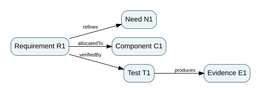

2. Model semantics: types, relations, constraints and consistency
Graduate-depth architecture sequence · Part II · Northstar digital system model
Prerequisites. Chapter 1, directed graphs, sets, relations, and basic programming-language types. Use with: MBSE, Digital and Mission Engineering, and System Design and Integration.
2.1 A model is a theory of a system
A useful architecture model makes claims that can be inspected, queried, challenged and revised. A drawing alone is a view, not necessarily a model: two boxes joined by a line do not tell us whether the line means physical flow, information exchange, responsibility, dependency or co-location. The same drawing can support mutually incompatible interpretations. A model becomes computationally useful only when its elements and relationships have explicit types and semantics.
Let $V$ be a set of elements and $E$ a set of directed relations. A typed multigraph is $G=(V,E,\tau_V,\tau_E)$, where $\tau_V$ maps each node to an element type and $\tau_E$ maps each edge to a relation type. We allow several relationships between the same ordered nodes because a requirement can be both allocated to and constrained by a particular component. The model's metamodel defines allowable element and relation types and their constraints.
For our teaching metamodel we distinguish Need, Requirement, Function, Component, Interface, Test, and Evidence. Some allowed edges are refines(Requirement,Need), allocatedTo(Requirement,Component), realizes(Component,Function), verifiedBy(Requirement,Test), and produces(Test,Evidence). An edge verifiedBy(Component,Need) is rejected on type grounds. The metamodel does not prove the remaining links are true, but it prevents an entire class of category errors.

2.2 Semantics and the SysML v2 context
The OMG SysML v2 standard was adopted in 2025 and supplies a modeling language with formal semantic foundations, complementary textual and graphical representations, and an API/services specification. See the official OMG specification. Our exercises do not implement SysML v2 and are not a SysML conformance test. They use a deliberately smaller, tool-neutral model to teach the underlying typed-relationship reasoning. This distinction is essential: a JSON graph is not a standards-compliant SysML model just because it describes requirements and components.
SysML language constructs enable structure, behavior, requirements and verification to be represented and interrelated. Professional use additionally requires a disciplined modeling method: agreed viewpoints, naming, units, ownership, baselines, review rules, version control and a strategy for model exchange. A model language makes representations possible; a modeling method decides which assertions must exist to support a question.
2.3 Express constraints as executable invariants
Suppose every high-criticality requirement must have an owner and at least one planned verification. Define $R_h$ as the set of such requirements. Then
A stronger evidence condition also requires an acceptable evidence object produced by a test run against the applicable baseline. These are different maturity states. Our checker can establish syntactic coverage and simple version matching, but assessing whether the test truly exercises the right operational scenario remains a human engineering task.
A second invariant addresses interfaces: every published interface must identify its producer and consumer components; every data field must have a unit, version or schema, and a defined invalid-data response. Pure name matching is insufficient. A field named position can be latitude/longitude, a road-network segment, or a vehicle-local coordinate system. A systems model should not permit a data stream to appear meaningful when its reference frame is unresolved.
2.4 Change-impact analysis is graph traversal plus judgment
For a proposed change to a software component, traverse reverse allocatedTo and dependency edges to discover affected requirements, test procedures and evidence. Let $D(v)$ be the closure of all nodes reachable from changed node $v$ under selected dependency types. This is a candidate impact set, not proof that every reachable item must change or that every relevant effect has been captured. The result depends on completeness of the modeled relationships and the choice of edge types. Some propagation requires physics and dynamics, not graph topology alone.
For example, changing the telemetry timeout from 5 to 10 seconds might alter a software timer, operator cue, route freshness constraint, fault-detection latency, and a safety hazard. A graph with only allocation links will likely miss the temporal interaction. A better model includes dependsOn, constrains, and hazardMitigatedBy relationships, plus parametric constraints and behavioral properties. Do not falsely claim that traceability is an impact oracle.
2.5 Parametrics, dimensional analysis and constraint propagation
Consider a simplified energy budget for a route of $d$ km. Vehicle energy consumption is $e$ kWh/km, overhead per route is $h$ kWh, and reserve is $r$ kWh. Available battery energy is $B$ kWh. The requirement is
Suppose $d=24$ km, $e=0.62$ kWh/km, $h=1.8$ kWh, and $r=4.0$ kWh. Required energy is $14.88+1.8+4=20.68$ kWh. A 21 kWh usable battery leaves just 0.32 kWh margin under the nominal assumptions. If energy per km increases to 0.70 because of adverse weather, the required energy becomes 22.6 kWh: the baseline is infeasible. This is constraint propagation, not merely a weighted preference trade.
A unit checker should reject $d$ entered in miles when a parameter is declared in kilometers unless conversion is explicit. Correct unit metadata does not make the model physically credible, but silent unit errors can invalidate every downstream optimization and test threshold.
The local Python laboratory implements a minimal typed graph and energy-budget rule. It is not a replacement for a SysML tool; it is a transparent training instrument for recognizing properties of a larger model-based process.
2.6 Model viewpoints and information loss
An operational viewpoint emphasizes missions and actors; a logical viewpoint emphasizes functions and data; a physical viewpoint emphasizes components and interfaces; an assurance viewpoint emphasizes requirements, hazards and evidence. Each view intentionally hides some information. If two view diagrams disagree about the existence or ownership of a function, the underlying model should resolve that discrepancy. A model-driven workflow derives multiple views from shared underlying elements instead of manually synchronizing unrelated pictures.
A practical model review asks three questions: completeness (what relevant relationships are missing?), consistency (do the recorded relationships violate type, value or temporal constraints?), and adequacy (is the model capable of answering the actual engineering question?). Passing completeness and consistency checks never guarantees adequacy.
2.7 Worked change review
A dispatch-service update changes the maximum age of a route-permission token from 4 seconds to 9 seconds. The changed value is syntactically consistent with a nonnegative timeout and will pass most naive validation checks. But the hazard control requires that stale road-closure information not be acted upon after 5 seconds. The model therefore contains an inconsistent cross-domain constraint. The architecture engineer must connect token age, route freshness, message latency and hazard exposure. A software-only view cannot establish the relevant system-level effect.
A disciplined change request records the altered assumption, dependency closure, unresolved links, affected verification cases, required test environment, and the evidence needed to accept the new baseline. A changed model without refreshed evidence does not inherit the previous assurance claim.
Problems — attempt before opening solutions
- Specify a type violation and a semantic problem for
verifiedBy(R-1,T-1), whereR-1requires safe emergency routing andT-1only checks JSON parsing. - A route is 30 km, $e=0.55$ kWh/km, $h=2$ kWh and reserve $r=3$ kWh. Is $B=22$ kWh sufficient? What if the unit for distance were actually miles?
- A component revision changes an interface timeout. Explain why transitive graph reachability is neither sufficient nor always necessary for an impact decision.
- Write a logical condition for every high-criticality requirement to have at least one allocated component and at least one verification procedure. Distinguish this from a pass condition.
Worked solutions
- Both nodes could have correct types, so the relation need not violate the metamodel. It violates semantic adequacy: parsing is not evidence of safe routing. Reject claims that merely point at a test ID.
- Energy is $30(0.55)+2+3=21.5$ kWh; nominal margin 0.5 kWh. If 30 miles were mistakenly treated as 30 km, the route would actually be about 48.28 km and the energy requirement about 31.55 kWh, which fails. Record the unit conversion explicitly.
- The graph may omit environmental or dynamic mechanisms, generating false negatives. Conversely, some reachable dependencies may be insulated from change by a stable contract, generating false positives. Reachability is a review aid.
- $\forall r\in R_h;\exists c\in C,t\in T:[\mathrm{allocatedTo}(r,c)\land\mathrm{verifiedBy}(r,t)]$. To claim a pass, add acceptable configured evidence generated from $t$ under applicable conditions and evaluated against a criterion.
Applied laboratory
Typed-model validation lab · Editable JSON model · Python checker · Sequence index.
Primary reference: OMG SysML v2; NASA Systems Engineering Handbook. The teaching metamodel is intentionally simplified.
Step 04 advanced integration — graph reachability versus applicable evidence (NS-AA4.1)
A1. Formalize what the typed graph can establish
The case model contains three high-criticality requirements, three allocated components, three tests, and three evidence nodes. A planned verification path for requirement \(r\) has the form
\[ r\xrightarrow{\mathrm{verifiedBy}}t\xrightarrow{\mathrm{produces}}e,\]
with a separate allocation edge \(r\xrightarrow{\mathrm{allocatedTo}}c\). A simple graph checker can assert the existence of both relationships and check node types. In a finite graph, enumerating the edges is a decidable mechanical task. The model does not prove that the component actually implements the requirement, that the test samples relevant hazards, or that the evidence was collected on the proposed configuration.
Define the applicability predicate \(A(e,v,s)=1\) when the evidence record exists, identifies configuration revision \(v\), has PASS status, and includes a scenario description \(s\). This is an administrative screening rule, not a scientific rule of sufficiency. For a requirement \(r\), the checker seeks an allocated component and a path to at least one applicable evidence record:
\[ \mathrm{Screen}(r,v)=\mathrm{Allocated}(r)\land\exists(t,e)\,[\mathrm{VerifiedBy}(r,t)\land\mathrm{Produces}(t,e)\land A(e,v,s)]. \]
The executable screening code computes defects for each requirement, but does not equate a complete path with mission readiness.
A2. Work a version transition, not just a missing-link exercise
At configuration rev1, a route-interface smoke test was recorded as PASS for E-ROUTE. The decision package now targets rev2, with the road-status interface changed to version 2.0. The route evidence remains tagged rev1; consequently R-ROUTE has a complete typed path but fails the applicability screen as stale-revision. Its status is not repaired by renaming its evidence ID or copying the PASS field into a new row. An acceptable requalification path would document interface compatibility, update the test procedure if needed, rerun adverse route-status conditions, attach revision-specific results, and obtain an appropriate review.
A valid reachability graph is a useful change-impact starting point. If the change affects a shared time service or an external route provider not represented in the graph, reachability can miss the affected requirement: this is a false negative. If a contract is proven unchanged, reachability can conservatively flag an unaffected result: this is a false positive. Completeness of the dependency model is therefore an independent assumption.
A3. Counterexample: syntactically green, semantically invalid
In this case E-TIME and E-ACCESS are recorded PASS for rev2. Their nominal campaign was evaluated without the declared timestamp guard band. The graph checker returns no structural or revision defects for them; however, the measurement analysis shows both requirements fail under the conservative measurement contract. This is an intentionally constructed semantic counterexample to the proposition that passing linked tests establishes system compliance.
A stronger assurance architecture records (i) procedure identity and admissible scenarios, (ii) intended claim and adjudication rule, (iii) provenance hashes and target configuration, (iv) observed data including anomalies, and (v) independent reviewers and unresolved objections. A claim/evidence graph may then help find missing relationships, while human and empirical review decides inferential validity.
Exercise. Suppose E-ROUTE is copied into a new record labeled rev2 without rerunning the test. Will the current checker flag a stale revision? Worked solution: no; the syntactic screen sees matching strings. The assurance case must therefore require stronger provenance (immutable inputs and test-run identifiers, authorized sign-off, reproducible event logs). This deliberate weakness is part of the teaching case, not a hidden guarantee.
Reproduce: inspect evaluate()['evidence_findings'], then mutate case['evidence']['E-ROUTE']['revision'] in a temporary in-memory copy. The result demonstrates what the checker can and cannot detect. Continue to behavioral transition checks.